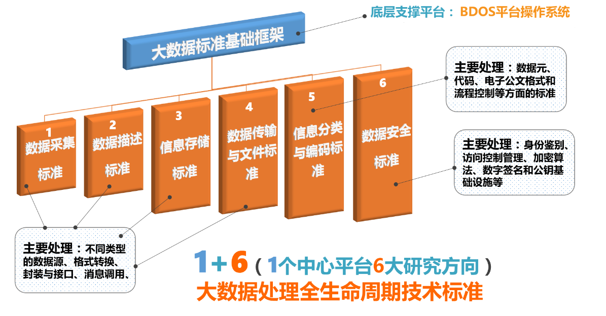
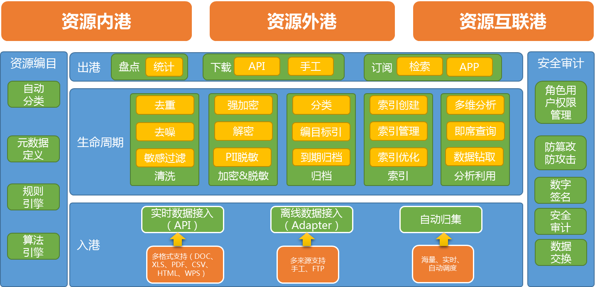

1、政府大数据发展的机遇与挑战
政府大数据机遇
“政府”和“大数据”的结合成为历史发展的新趋势，政府大数据技术建构和数据应用进入了启动期，技术的研发，应用的创新，管理的调整，理念的学习，成为政府大数据发展的关键词。
政府大数据方向
- • 以数据为中心构建政府应用系统
- • 跨行业、跨领域的综合数据分析与预测
- • 让数据成为真正的资源，可以交易
- • 利用大数据为政府创造价值
- • 依托大数据技术改变政府服务方式
政府大数据挑战
数据主要用于统计，大量数据丢失，重视结果，不重视数据
孤岛现象突出，数据很难有效共享
数据良莠不齐、质量低，数据格式不统一
数据难管理
组织/行业政策上的限制
缺乏激励和规则，数据共享多限于内部，制约其价值实现
数据的可靠性和安全要求高，数据共享与隐私的矛盾等问题顾虑重重
不同数据的混合存储，数据分析复杂度提升
2、清蓝大数据政府大数据解决方案
清蓝大数据创新研究院基于政府的实践经验推出了政府大数据解决方案，基于大数据共享服务平台提供多种服务能力，涵盖了政府大数据产业规划顶层设计、大数据标准的咨询、大数据产业链的整合、以及大数据生态的构建在内的各个方面，从政府数据仓库到大数据存储与分析平台，形成一个完整的大数据应用支撑体系。
大数据标准解决方案：清蓝大数据大数据标准按照“1+6”的理念进行设计，即以QD-OS平台操作系统为支撑，构建6大标准研究方向，分别是数据采集标准、数据描述标准、信息存储标准、数据传输与文件标准、信息分类与编码标准、数据安全标准，通过平台和数据标准的建设，帮助政府解决数据共享难、数据格式不统一、数据标准不规范、数据重复建设等难题。
政府大数据港解决方案：清蓝大数据政府大数据港的建设主要围绕着一个核心、两条主线、三种模式、四项任务和五大意义这五个维度进行展开，秉着“标准先行，技术保障，业务驱动”的原则进行规划。
一个核心：
始终围绕盘点和整合数据资源为核心
两条主线：
构建对内对外两条服务主线；对内，构建数据资产盘点标准和资产管理体系；对外：提供数据共享开放服务能力（有限开放、完全开放）
三种模式：
按照电子政务系统等级保护的要求，提供数据资源内港、外港和互联港三种服务模式；其中，内港：内部使用，不提供共享，内部盘点，统计；外港：本市使用，区域内共享；互联港：全部公开，服务大众创业，万众创新；满足不同层级的要求。
四项任务：
数据资源编目体系和盘点标准研究，数据接入整合能力建设，数据清洗脱敏处理体系建设，数据应用服务体系建设；
五大意义：
1.数据资产明晰化；2.数据管理规范化；3.数据共享联动化；4.数据保障体系化；5.数据应用普适化；

3、政府大数据解决方案的价值
促进政府职能的转变
大数据的应用提高政府部门的办公效率，方便办公人员进行数据的共享并实现业务的办理。为打造创新型服务体系的新政府提供强有力的数据支撑。
优化产业结构调整
基于数据标准建立大数据服务平台，挖掘大数据核心产业以及外围产业，将政府大数据相关产业资源进行整合形成政府大数据产业链，搭建政府大数据生态体系。
促进民众信息消费
大数据提升城市设施智慧化水平，使民众生活日趋优质，通过民众大数据行为分析能为用户提供精准的信息服务。
4、案例名称：新疆自治区大数据标准建设项目
项目现状与问题
由于新疆自治区地域广、人口分布不集中，日常的管理工作难以做到精确，对于人口、经济、地名、地址等数据库没有建立统一的标准，政府平级部门之间数据格式不兼容、无法进行业务模型的建设和应用的拓展，所以急需建立政务大数据信息交换共享平台来解决政府对于数据管理和业务应用的难题，让新疆自治区真正实现“大数据”的应用。
项目成果与价值
1、改善政府自身发展
通过建设大数据标准促进政府行政运作改革；提高行政运行效率，加快信息传递速度；简化行政运作环节和程序，改善政府服务质量，提高政府决策水平。
2、政府组织结构与运作机制的变革
通过建设大数据应用使政府职能将从以管理为主向服务转变，通过大数据技术为政府定制上层应用，使组织内部更加有效率。数据的组织方式也更加合理，有效降低政府运行成本并增加透明度，杜绝重复建设现象的出现。
3、提升政府服务能力
节省了企业、民众与政府的交互时间，提高办事效率；同时依托大数据技术，将有助于提高政府办公人员对于信息化的理解能力，并提升全民教育水平。